О проекте
Период, описанный в кейсе: март 2022 - март 2024.
Гео: Москва, Санкт-Петербург, регионы.
О чем поговорим:
1. Волшебная палочка 2023-2024 года: как мы погрузились в продукт клиента, выявили точки для масштабирования и нашли скелеты в шкафу конкурентов при анализе рынка.
2. Какие дополнительные инструменты использовали, когда уперлись в потолок по лидам с Яндекс.Директом.
3. Как наш подход к проекту помог обойти двух конкурентов: отношения, которые длится уже 2 года.
Вступление:
В далеком 2022 году клиент обратился к нам с запросом увеличить количество лидов и уменьшить стоимость заявки, так как предыдущий подрядчик не мог закрыть эту потребность.
К этому времени мы уже сотрудничали с «Суперменом»: разработали визуал и собрали на CMS October многостраничный B2B и B2C сайт. Ознакомиться с сайтами можно ниже по ссылкам.
b2b
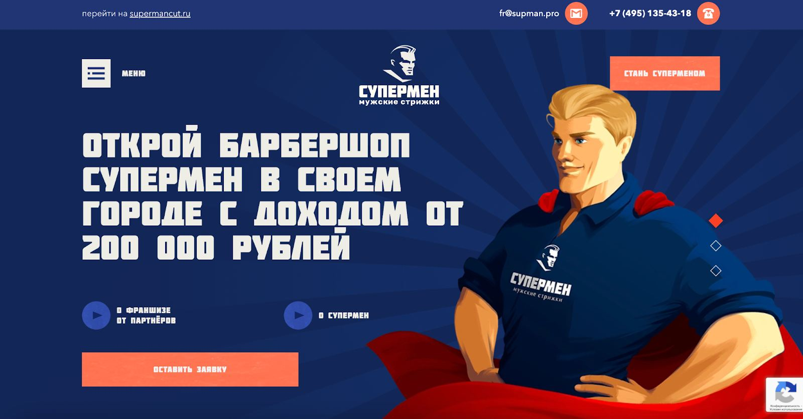
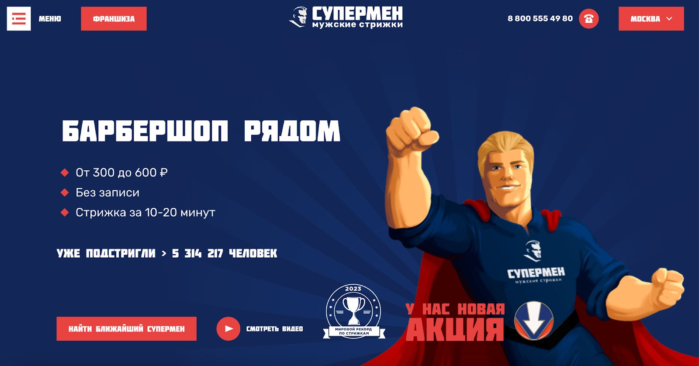
Также ещё в 2020 году мы взяли в разработку мобильное приложение с бонусной системой для записи на стрижку и кастомную CRM-систему для франчайзи, чтобы отслеживать динамику развития салона. Но это темы уже для отдельного кейса, который вы сможете найти на сайте. Вернёмся к трафику.
Стартовым инструментом выступал Яндекс.Директ. С нуля собрали рекламные кампании: подобрали семантическое ядро, список минус-слов, составили для каждой группы объявлений по три объявления с разными офферами для подбора наилучшего варианта. Скорректировали цели для Яндекс.Метрики после прошлого подрядчика. Создали сегменты для ретаргетинга, разработали креативы, в том числе и для графических объявлений.
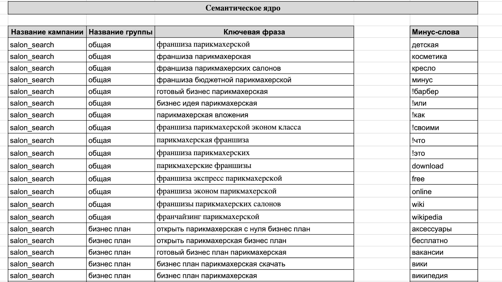
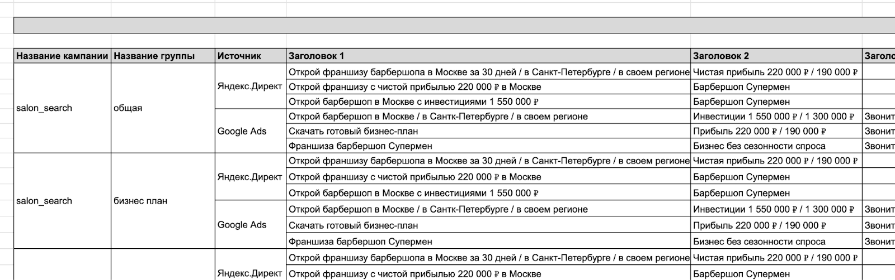
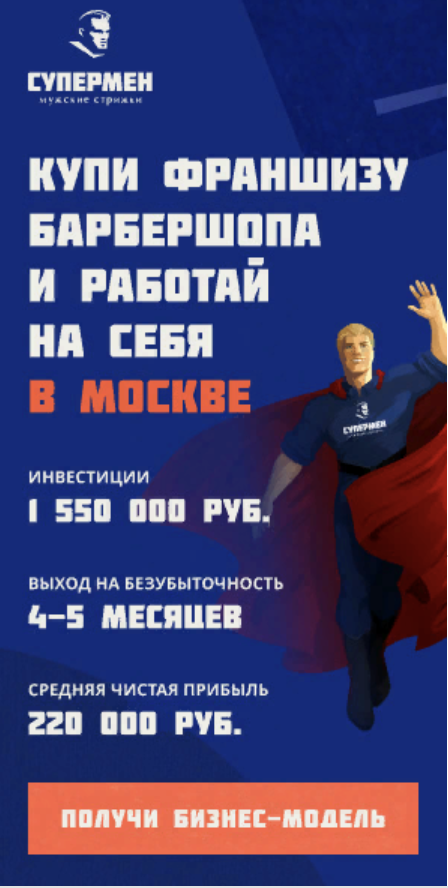
Да, на скриншотах вы можете видеть, что объявления в тот момент писались и для Google Ads. Однако мы все знаем, что происходило в марте-апреле в сфере маркетинга 2022 года.
Коротко обозначу нюансы по 2022 году, так как большинство дополнительных инструментов внедрялось в 2023 году.
Что было в 2022 году. Дневник:
Апрель - резкий спад обращений в связи с откликом на нестабильную политическую ситуацию. Рост стоимости конверсии (заявка, переход в мессенджер, звонок) с 1500 руб. до 3100 руб.
Май - добавили медийные рекламные кампании в Яндекс.Директ с оффером "Франшиза Супермен - стабильная прибыль даже в кризис". Рост показов виден по статистике ниже: с 700 тыс. до 1.5 миллиона.
Июнь - продолжали использовать медийную кампанию. Стоимость конверсии во время медийной кампании зафиксировалась на 2500 руб. Подготовили динамический моушн-креатив для повышения CTR. Видео можно посмотреть по ссылке.
https://disk.yandex.ru/i/nYrSyecmPs0MPQ
Июль - аномальный рост переходов в WhatsApp с сайта. Общее количество конверсий выросло с 46 в июне до 117 в июле. Однако такого же резкого всплеска обращений в WhatsApp не появилось. Перепроверили цель Метрики на корректную работу. Цель срабатывала корректно.
Август - аномальная тенденция переходов в WhatsApp продолжалась. Однако количество обращений все так же не росло. Было принято решение отказаться от медийной кампании в Яндекс.Директ.
Сентябрь - тенденция по заявкам вернулась к числу 50. Но в тот жаркий сентябрь мы все помним, что произошло в России, поэтому в октябре нас ждал сюрприз в виде отклика ЦА на события в стране.
Октябрь - давайте зафиксируем. Было 3 заявки по цене почти 14 000 руб. Думаю, тут не нужны комментарии. В этот же месяц усилили в офферах посыл про "стабильный бизнес в кризис".
Также в этом месяце было принято решение отказаться от мессенджера WhatsApp на сайте для более корректной статистики в отчетах. Такое решение было принято после повторного сравнения количества обращений с WhatsApp и отображаемых переходов в WhatsApp в отчете.
Ноябрь - ситуация начала стабилизироваться. Количество обращений начало выравниваться. В отчете мы получили новые цифры после отказа от WhatsApp. Да, количество лидов стало меньше. Да, стоимость лида выросла, но данные стали более корректными.
Рынок все еще штормило по стоимости заявки после событий сентября. В этом месяце стоимость заявки составила 3900 руб. Нам предстояла большая работа: несмотря на ситуацию на рынке, постараться выровнять стоимость лида. Начались эксперименты с технической частью Яндекс.Директа и с рекламным бюджетом.
Декабрь - вышли на новый уровень. При бюджете меньшем, чем 2-2.5 "досентябрьских" событий, мы даже чуть прибавили в лидах на 23% по сравнению с прошлым месяцем, а стоимость лида составила 1847 руб. вместо 3900 руб.
И в этом же месяце мы поставили жирную точку в подходе к проектам. Наш фокус сместился с технической части на более детальный анализ конкурентов и на работу с упаковкой продукта франшизы Супермен. Отсюда подробнее.
Провели конкурентный анализ 6 основных конкурентов на тот момент. Помимо условий по окупаемости, сфокусировались также на том, как франшиза закрывает страхи потребителей:
— как делают жизнь франчайзи более комфортной до первой прибыли с точки зрения и далее до полной окупаемости,
— какие гарантийные обязательства может дать франшиза своим будущим франчайзи,
— с помощью каких конкретных инструментов франшиза помогает быстрее выйти на первую прибыль,
— как менеджеры отрабатывают лиды по звонку и на какие промежуточные этапы переводят потенциального клиента,
— собрали по большинству франшиз презентации, договоры, бизнес-модели.
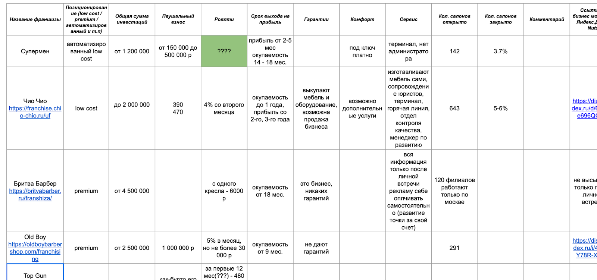
Провели 4 глубинных интервью с потенциальными потребителями Супермена, которые еще не слышали о Супермен. Подобные интервью отличаются от опросника тем, что диалог с респондентом динамичный, дополнительные вопросы формируются в ходе разговора.
Основная задача данных интервью - собрать боли, желания и страхи потребителей перед покупкой франшизы. Интервьюеры часто отмечают, что чувствуют себя как будто на сессии у психолога. Такие сессии могут занимать 1.5-2 ч.
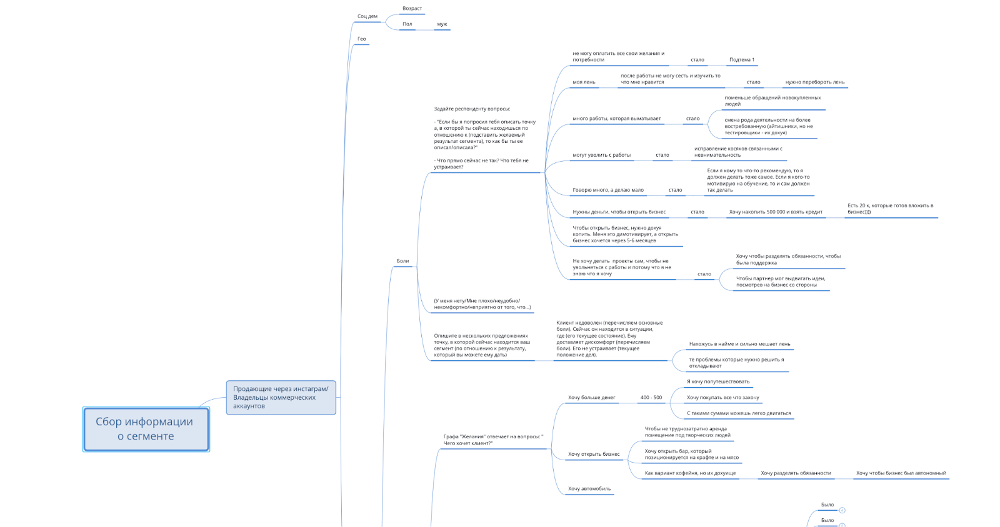
С помощью интервью открыли "Ящик Пандоры": подсветились те барьеры и желания ЦА, которые еще не были закрыты офферами на основном сайте Супермена. Я говорю "основной", т.к. далее будет фигурировать еще несколько продающих посадочных страниц.
Итак, в следующем году предстоит большая работа по упаковке продукта "Супермен": сформулировать новые смыслы для повышения конверсии, усилить те офферы, которые уже существуют, подобрать новые связки для взаимодействия с аудиторией с более низким уровнем потребительской осознанности — те, кто хотят открыть свой бизнес, но еще не остановились конкретно на франшизном бизнесе в нише барбершопов.
Новый 2023 год. Новые горизонты маркетинга
Январь 2023 года начался с просадки. Ну как же без неё в январе. Количество лидов сохранилось, как и в прошлом месяце — 26. Однако пришлось увеличить бюджет, чтобы поддержать тенденцию по количеству лидов. Стоимость лида вернулась к 3 800 р.
Февраль 2023 года — снова тестируем стратегии при ограниченном бюджете до 60 000 р. Количество лидов снизилось на 34% при снижении стоимости лида на 10% — до 3 431 р.
Делаем дополнительный конкурентный анализ. Вводим бальную систему для сравнения франшиз.
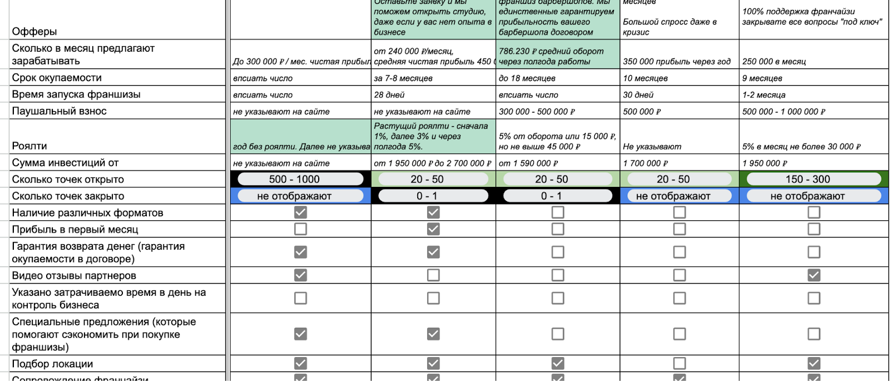
Повторно звоним конкурентам и записываем скрипты обработки по телефону. Отправляем скрипты клиенту для анализа.
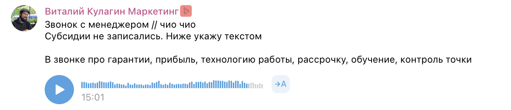
Создаем общий документ с выводами по проведенным в декабре интервью. Готовим отчет за прошедший 2022 год.
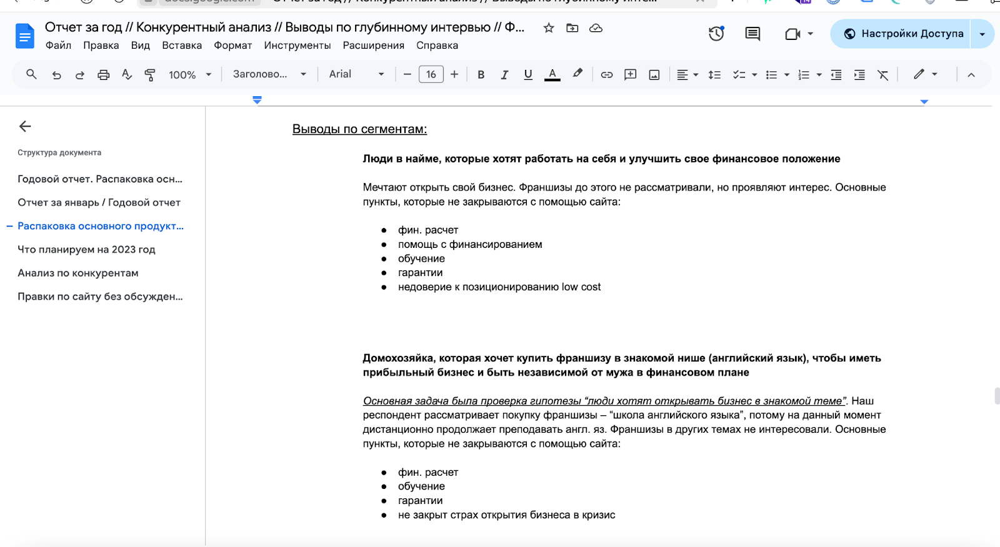
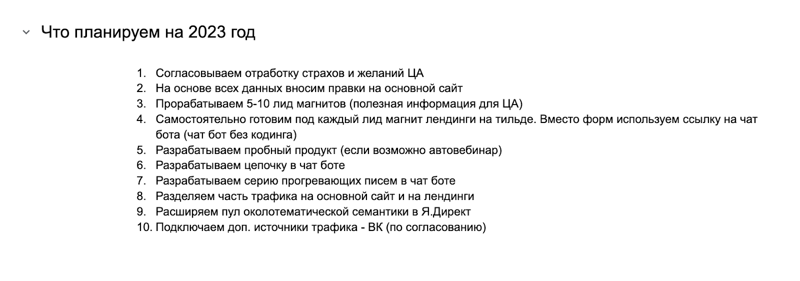
С этого момента началась интенсивная работа по формированию офферов и согласованию их с руководителями проекта. Наша задача состояла в том, чтобы догнать конкурентов по тем пунктам, где мы не отвечали на желания и страхи потребителей: добавить новые обещания на посадочные страницы.
Новые обещания требовали обсуждения внутри команды, поскольку они были глобальными или требовали вмешательства юриста. Однако это было необходимо из-за "хотелок" потенциальных клиентов, которых мы опрашивали в ходе интервью. А главная задача маркетинга — убедить потребителя.
Март 2023 года - количество обращений увеличилось на 52%. Мы достигли 26 заявок, CPL снизился на 41% и составил 2024 рубля вместо 3400 рублей в феврале. Продолжаем экспериментировать с ограниченным бюджетом, фокусируясь на поисковых рекламных кампаниях, поскольку РСЯ предоставлял нам только охваты.
Также на показатели влияла сезонность - люди оживились после зимы.
Этот месяц также прошел в мозговых штурмах: генерировали идеи для лид-магнитов, разрабатывали различные цепочки для чат-бота.
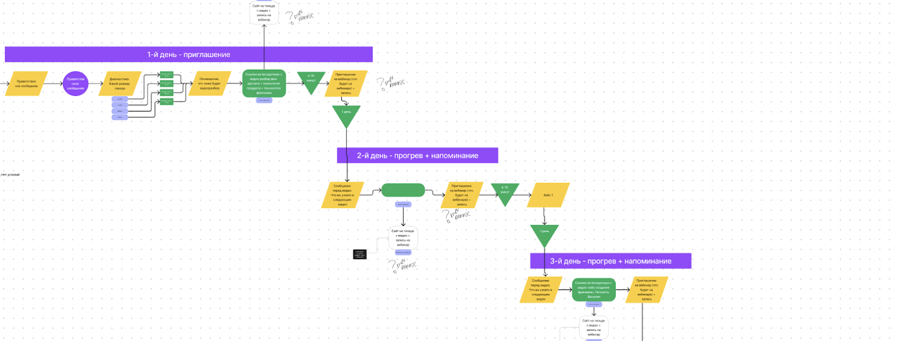
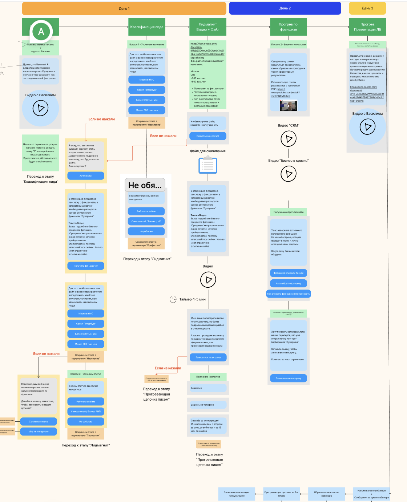
Апрель 2023 года - начали поступать первые согласования по офферам из блока "безопасность": какие сильные гарантийные обязательства может предоставить Супермен своим будущим франчайзи. Честно говоря, не всё удалось согласовать, на что мы рассчитывали.
Этот месяц был насыщен согласованиями. В предыдущих месяцах я не упомянул о "продукте-пробнике", который мы хотели внедрить на новой посадочной странице. Пробник - это дополнительная точка соприкосновения с потребителем: предоставляем возможность "пощупать" основной продукт перед покупкой. В качестве такого пробника мы предложили бесплатный пробный курс по открытию франшизы на платформе Getcourse.
Эти шаги могли бы стать революцией в нише франчайзинга барбершопов. На тот момент ни одна из франшиз не предоставляла подобной возможности. Такой продукт требовал значительных временных ресурсов со стороны Супермена.
На тот момент Супермен уже разрабатывали курс для действующих франчайзи: был разработан план блоков. Мы согласовали, что некоторую часть этого курса мы сможем использовать в качестве пробника.
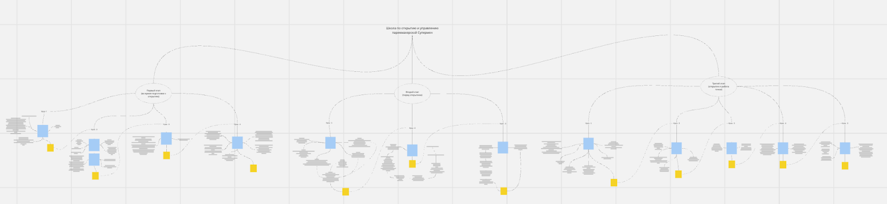
Мы продолжили работу над офферами для потребителей с различными уровнями осознанности. Разрабатывали блок "Сервис", в котором рассказывали, как Супермен помогает подобрать местоположение для открытия салона, что является ключом к 50% успеха при старте. Получили скриншоты и пояснения к процессу выбора местоположения.
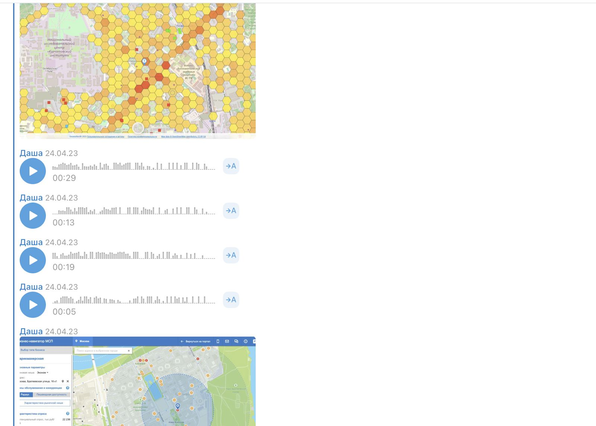
В конце апреля началась подготовка макетов для будущих посадочных страниц, предназначенных для перенаправления пользователя с рекламы в чат-бот в Telegram. Задумывалось прогревать пользователей перед предложением пробника или связи с менеджером.
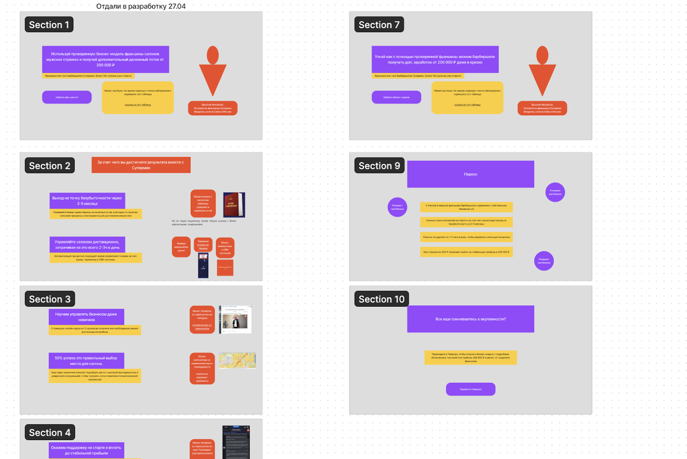
Хочется отметить, что на тот момент все действия происходили в рамках "контекстной рекламы". И это было не проявление щедрости. Причин было две:
— Проект был интересным в маркетинговом плане: можно было применять различные подходы, формировать офферы до бесконечности, улучшать "оболочку" продукта и наблюдать за ростом сети.
— У руководства проекта существовало правило: не класть все яйца в одну корзину.
Стабильно раз в год, а то и чаще, менялся подрядчик. Несколько раз сталкивались с этим правилом в будущем, но до этого момента оно никогда не срабатывало против нас. Почему? Об этом расскажу чуть позже отдельным блоком. Погнали дальше.
Май - продолжение удержания стоимости обращений в пределах 3000 - 2500 руб. Количество обращений - 23. Бюджет также удерживался до 60 000 руб.
Готовили лид-магниты в виде статей "Куда инвестировать в 2023 году", "В чем разница между открытием своего бизнеса и покупкой франшизы" и т.д.
В этом месяце также обсуждалась идея провести вебинар как еще один лид-магнит, так как в ранее проведенных интервью с потребителями проявилось желание "пообщаться с создателем франшизы, чтобы откровенно поговорить о всех подводных камнях". Вопрос доверия - блок безопасности. На тот момент пообщаться с создателем франшизы можно было только после подписания договора о покупке.
Конкуренты также экспериментировали с автовебинарами - запись с чатом, где поздравляли с новым годом в апреле. Да, там был создатель. Да, там был чат. Но… "Ни о чем". Тем не менее, это стало плюсом для нашего конкурента.
Началась подготовка структуры вебинара. Был внедрен триггер в виде скидки на паушальный взнос для тех, кто присутствовал на вебинаре и оставил заявку в течение трех дней.
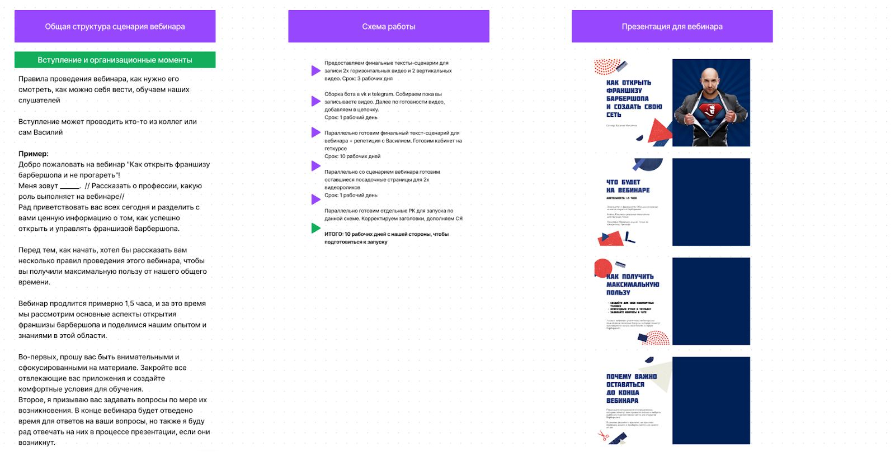
Также в конце месяца были подготовлены тексты для приветственных и прогревающих видео в Telegram. Чтобы ускорить запуск чат-бота и не ожидать контента от Супермена, было решено использовать имеющийся контент из YouTube-канала Супермена. Был проведен отбор наиболее подходящих материалов.
Июнь - количество заявок колебалось в пределах, аналогичных апрелю-маю. Получено 18 заявок по цене 2300 руб. В этом месяце акцент был сделан на перфоманс, поэтому были сокращены охватные кампании. Наметилась динамика роста конверсии сайта, которая будет продолжаться в последующие месяцы вплоть до мая 2024 года.
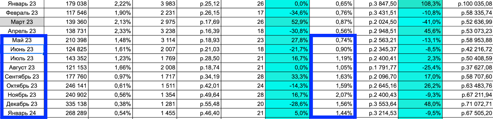
Параллельно была подготовлена цепочка для бота в Telegram в формате бета-версии. Это не стало нашим изначальным идеальным решением. Как было упомянуто ранее, решено было протестировать бота, не дожидаясь главных видеоматериалов.
В конце июня мы получили недостающее приветственное видео и провели финальные корректировки бота.
Кстати, одной из важных функций бота было не только переводить потребителя на следующий этап, но и создавать ситуацию знакомства потребителя с создателем франшизы. Это частично удовлетворяло запрос потребителя, выявленный в ходе интервью.
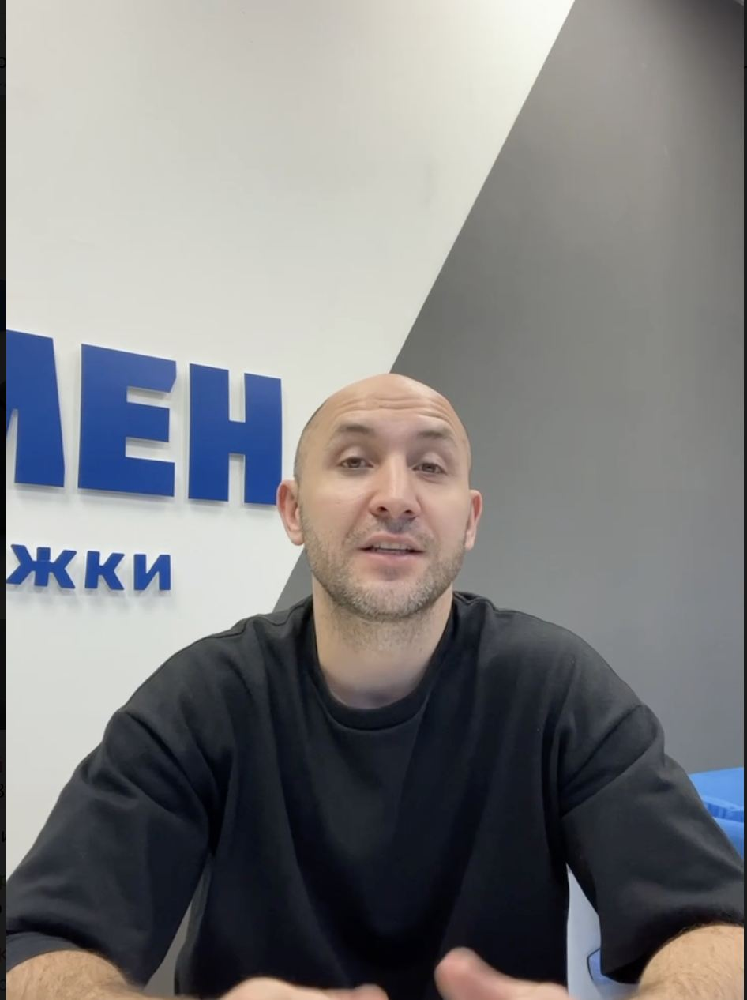
Разбор связки через бот
Июль - колебания цены и количества обращений по контекстной рекламе стабилизировались. Настало время пробовать тестировать новые инструменты для работы с потребителями на более ранних этапах.
Ведь поисковая выдача, на которую мы делали акцент в рамках перфоманс-маркетинга, больше работает с потребителями на верхних уровнях воронки продаж, в то время как реклама в Рекламной Сети Яндекса (РСЯ) идеально подходит для работы с теми, кто еще не готов оставить заявку на сайте.
Сейчас давайте разберем наши посадочные страницы для перехода в бот и цепочку самого бота. Поехали.
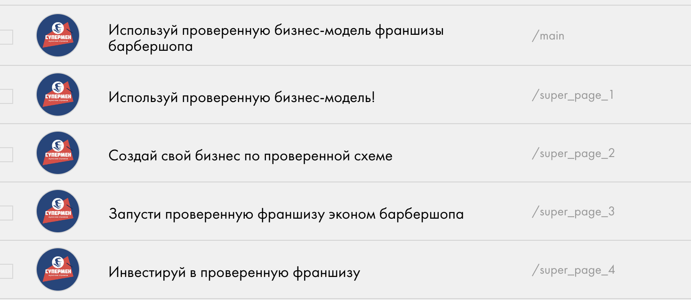
Было создано пять посадочных страниц. Они отличались друг от друга только предложениями в первом блоке, остальное наполнение было одинаковым. Задачи посадочной страницы:
1. Показать критериально измеримый результат.
2. Объяснить, почему достижение результата управляющей компанией делается простым и комфортным.
3. Ознакомить с обоснованием, почему именно low-cost барбершопы более устойчивы, чем другие франшизы в текущих реалиях России.
4. Перевести пользователя в бота.
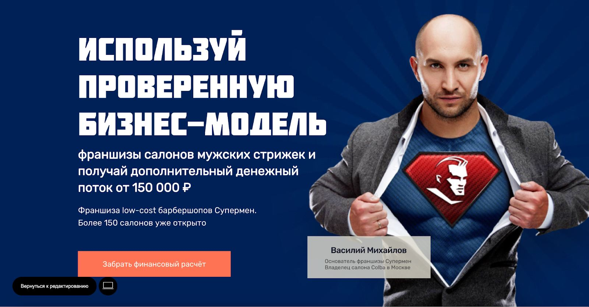
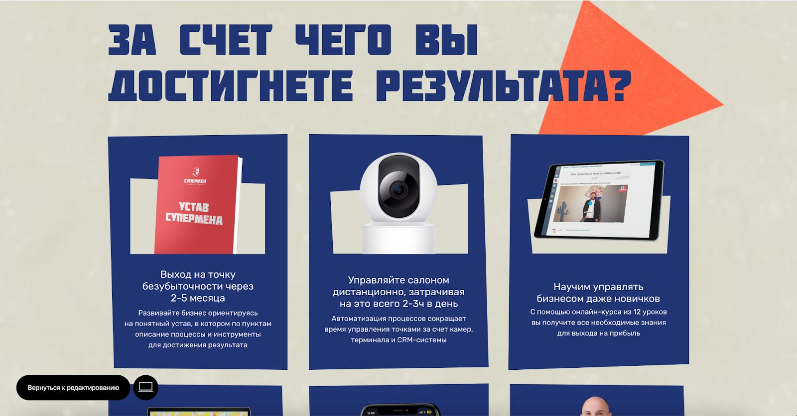
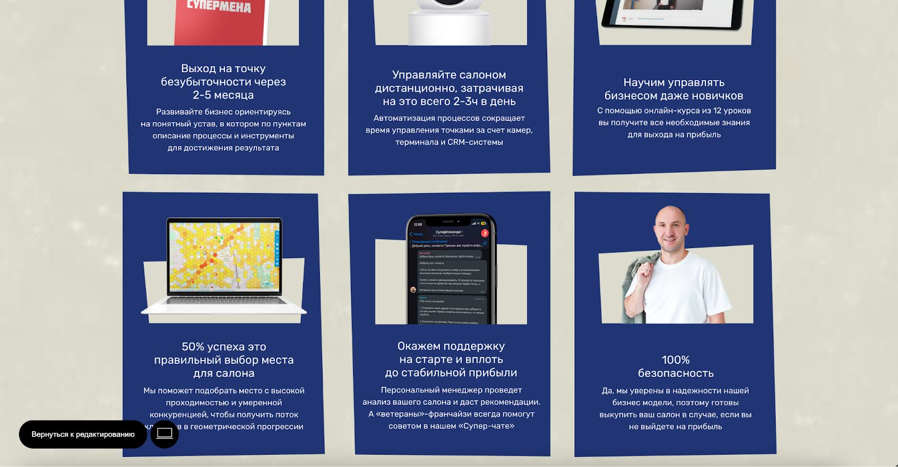
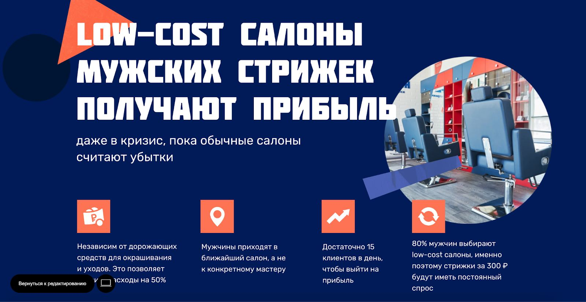
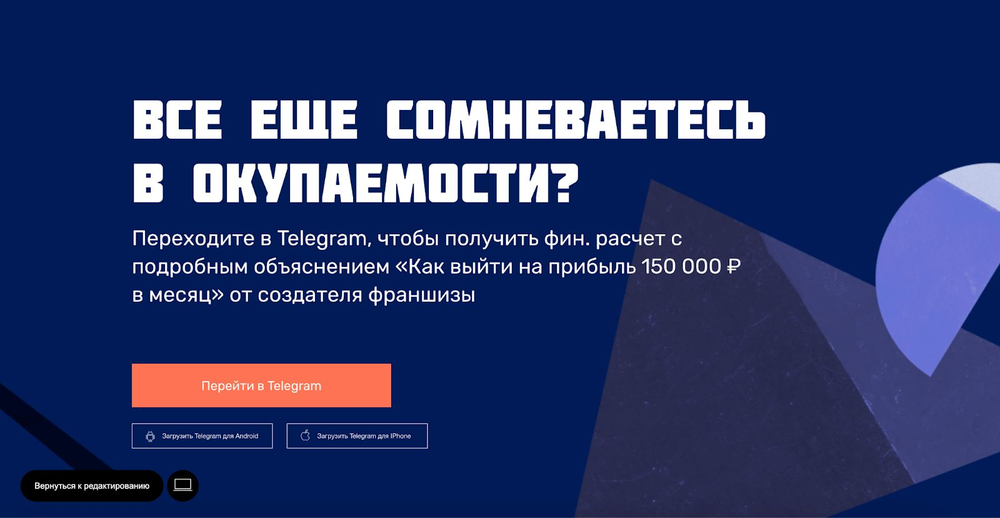
Что ждало потребителя в боте:
1. Знакомство с создателем франшизы.
2. Предоставление финансовой модели, адаптированной под размер города, где будет открыт салон.
3. Разбор финансовой модели.
4. Дополнительное обоснование, почему low-cost займет 60% рынка бьюти-услуг.
5. Реальный кейс франчайзи, который открыл 5 салонов.
6. Призыв к действию.
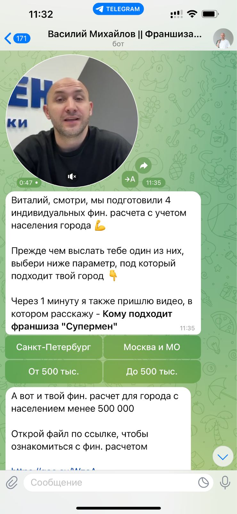
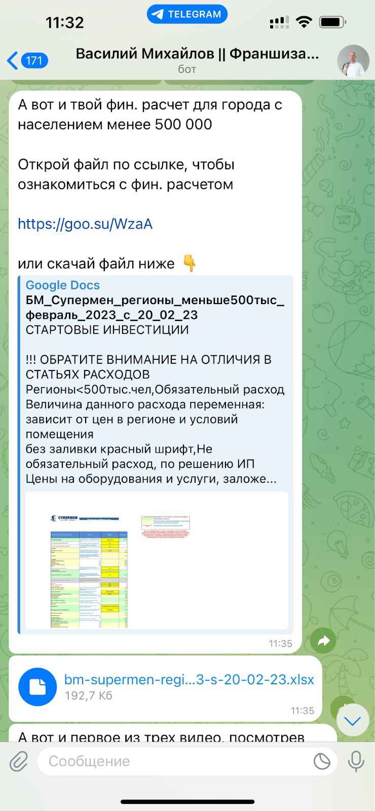
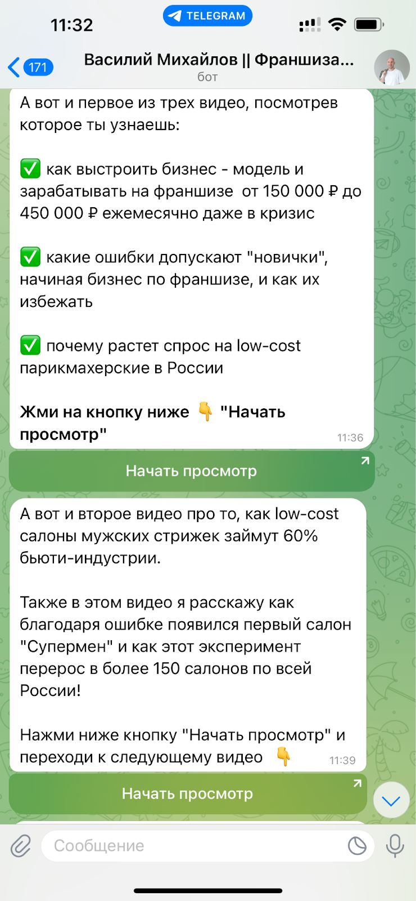
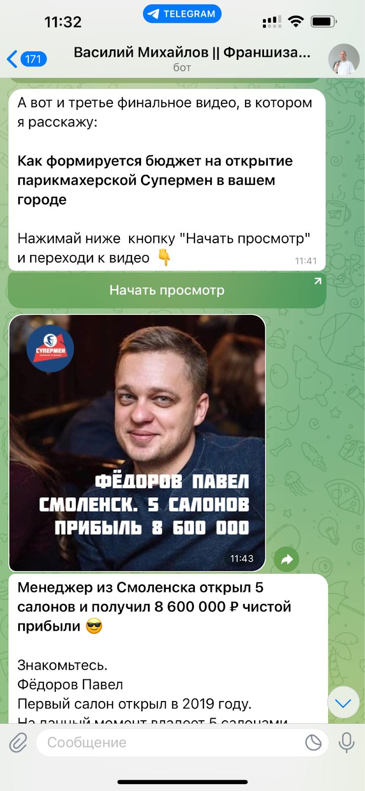
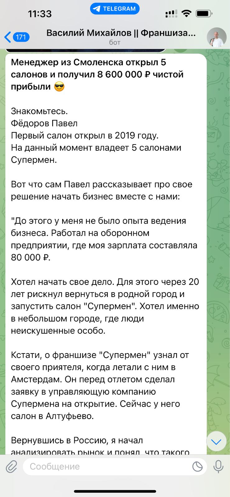
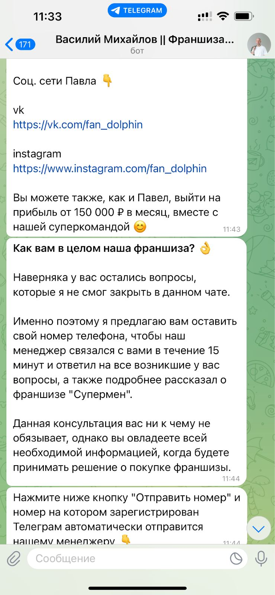
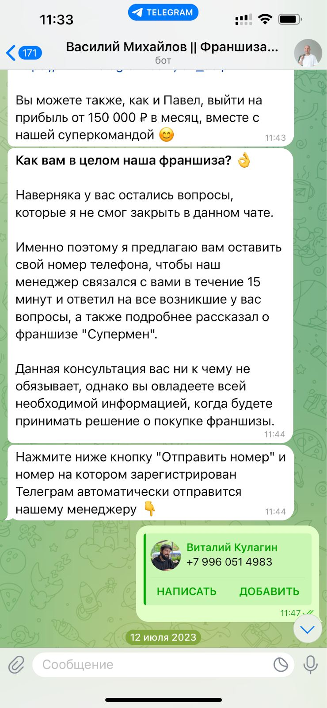
Видео также размещались на страницах в Tilda, чтобы отслеживать движение пользователей по воронке с помощью Яндекс.Метрики. Хочу отметить, что пока мы использовали видео, которые уже были на YouTube-канале Супермена, так как видео по нашим сценариям ещё не были готовы.
1-е видео в цепочке
http://superman.franshiza.tilda.ws/video_1
2-е видео в цепочке
http://superman.franshiza.tilda.ws/video_2
3-е видео в цепочке
http://superman.franshiza.tilda.ws/video_3
В июле был запущен бот, чтобы протестировать гипотезы и, при необходимости, скорректировать стратегию, поскольку темы для лид-магнитов еще находились на этапе согласования. Отсутствие лид-магнитов увеличивало сложность привлечения в воронку, и предполагалась высокая стоимость подписки на бота.
На старте были протестированы два формата объявлений. В первом варианте использовалось сочетание с привычными классическими офферами, но с рядом отличий:
1. Акцент был сделан не на рисованном персонаже Супермена, а на создателях франшизы – на реальных людях.
2. В объявлениях акцент был перенесен с "покупай" на "узнай, как".
3. Были добавлены дополнительные офферы, которые удалось согласовать после проведенных интервью.
Во втором варианте акцент был еще больше перенесен на получение информации, а не на продажу. Также в оффере была увеличена сумма прибыли с "150 тыс." до "200 тыс.", так как конкуренты уже давно использовали именно эту цифру.
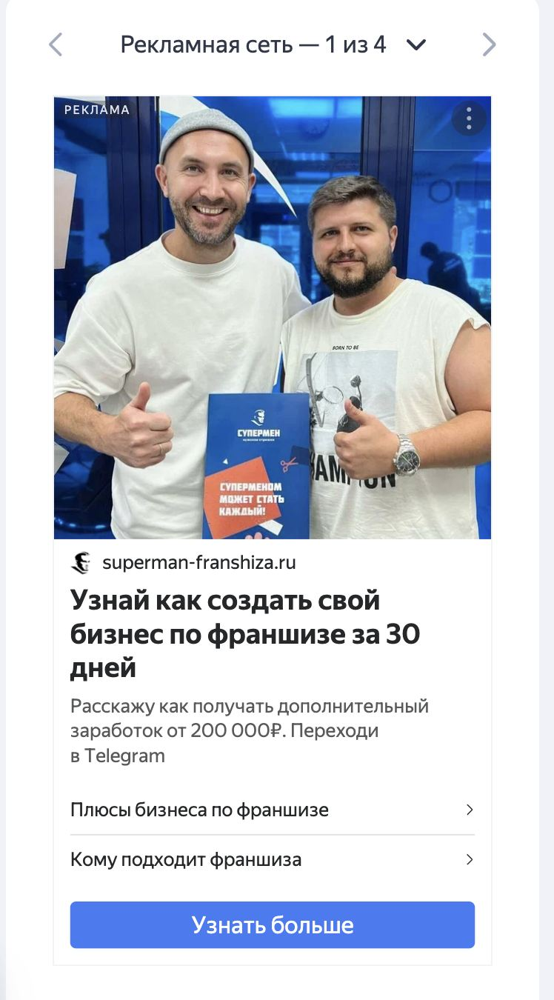
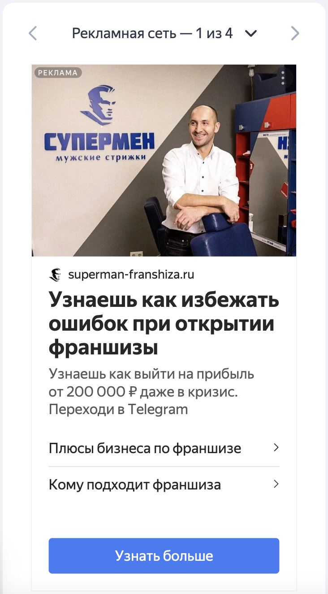
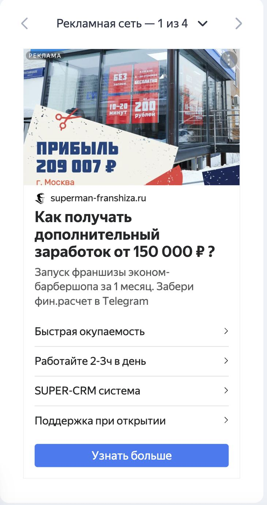
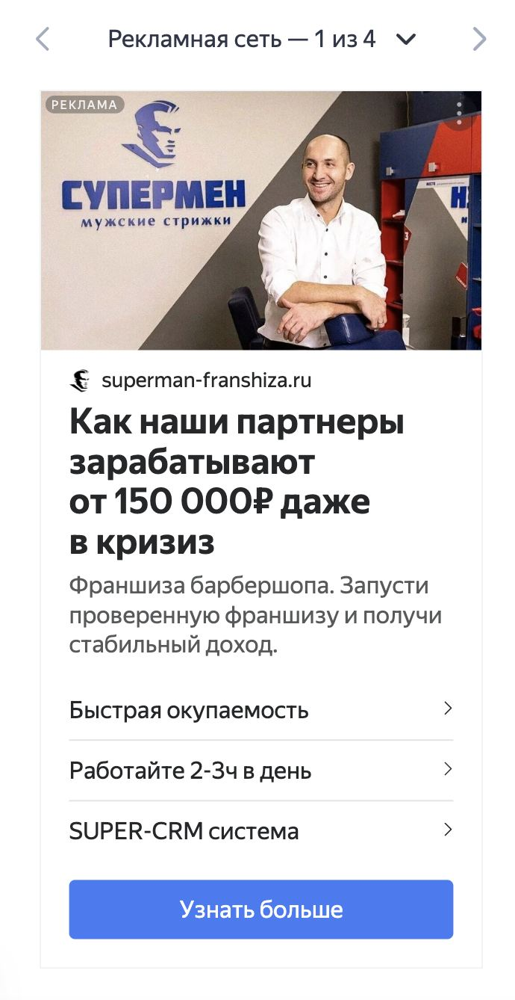
Что по итогу. Как и предполагали без лид магнитов в виде статей или более нативных форматов видео стоимость подписки оказалось высокой. Причем переход в бот составлял всего 400р. в то время, как запуск по итогу выходил 1900р.
Решили отложить эту историю до появления лид магнитов и видео, записанных по нашему ранее прописанному сценарию.
Август 2023
Подключились к подготовке лид-магнитов. Разбили темы по категориям, попробовали их сравнить для создания полноценной статьи.
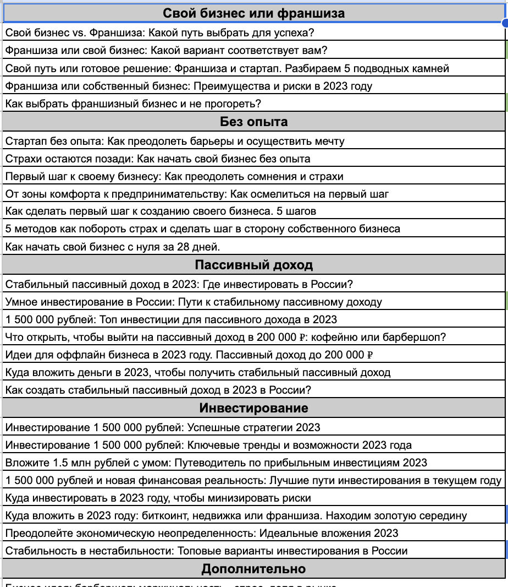
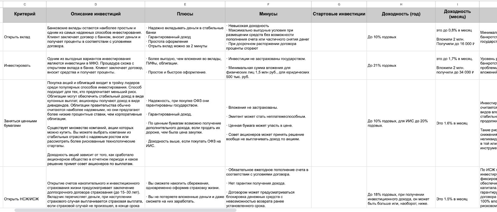
По классической лидогенерации был зафиксирован спад стоимости лида на 25%. Интересным моментом этого месяца стало появление конкурента. У руководителей Супермен уже был недавно негативный опыт с воронками через бота. Параллельно с нами над созданием воронки работала ещё одна команда.
Отличие заключалось в том, что мы углублялись в продукт и старались подготовить контент для более ранних этапов воронки, что занимало много времени и сил. Мы не делали обещаний, так как инструмент был новым для Супермена, и мы понимали, что нужно улучшить внешний вид.
В это время конкуренты обещали определённое количество закрытых договоров, создали воронку более короткую, чем наша первоначальная, и полностью перехватили внимание Супермена. Впоследствии мы узнали, что обещанный результат так и не был достигнут.
Эти события постоянно держали нас в напряжении, так как тесты нужно было проводить аккуратно, чтобы не создать у клиента ещё один негативный опыт. Тому же принципу мы следовали и в классической лидогенерации: меньше охвата, больше акцента на тех, кто уже готов оставить заявку.
Наша аккуратность сыграла с нами злую шутку. Появились конкуренты. Я не против аудита наших рекламных кампаний, но всем известно, как это обычно происходит: "ваш подрядчик — самый плохой, они много чего не сделали". При этом люди не утруждают себя проверкой истории изменений в аккаунте директа хотя бы за последний год.
На этот раз коллеги по цеху с одной стороны поступили именно так, как описано выше, с другой стороны предложили похожие гипотезы по улучшению внешнего вида продукта, которые мы так и не смогли реализовать. Моё уважение этой команде. Аудит был проведён достаточно грамотно.
Что касается технической части аккаунта, коллеги, проект Супермен — это работа с внешним видом продукта. Если бы я здесь описывал всю техническую часть, которую мы проделали, то этот кейс занял бы огромное количество времени.
Но каждый раз такие аудиты порождают сомнения в сердцах клиентов. Неизменно срабатывает синдром "упущенной выгоды", даже если вы сотрудничаете с клиентом уже более полутора лет.
Мы зафиксировались на этом моменте. Ближе к весне 2024 года это ещё сыграет свою роль. А пока всё остаётся на своих местах.
Сентябрь 2023
Новые мощные конкуренты появились на рынке франшиз барбершопов. Были проведены новые конкурентные анализы и скорректированы офферы.
В этом же месяце поступили видео, снятые по нашим сценариям. Нас предупреждали, что создатель франшизы может немного добавить от себя, но чтобы настолько... Вместо ожидаемых 5-минутных видео мы получили 40-минутные. Нарезка самой важной информации с нашей стороны заняла время.
Октябрь-декабрь 2023
Опущу некоторые детали по технической части. Стоит отметить, что были небольшие колебания в сторону увеличения стоимости заявки и в их количестве.
Еще в октябре мы начали разработку макета нового сайта для классической стратегии генерации лидов. Так как мы не могли сильно углубляться в тестирование бота, было принято решение сосредоточиться на классических методах. Более того, руководство Супермена было готово к такому шагу.
Мы собрали все лучшее из нашей предыдущей работы по усилению продукта. В декабре началась полномасштабная работа над сайтом. На этот раз сайт был создан на платформе Тильда. Тильда позволяет быстро запустить сайт и вносить бесконечные мгновенные правки, когда появляются новые гипотезы. Что еще нужно маркетологу для счастья?
С красно-синей цветовой палитры брендбука сайт перешел на "темную сторону". Мы сделали его одностраничным, а главная страница стала в 3-4 раза короче. И это тот случай, когда меньший размер идет на пользу.
К концу декабря сайт был готов. Финальные правки были внесены в середине января, уже после праздников.
Ниже оставляю ссылку на новый сайт и пару скриншотов для наглядности.
https://superman-franshiza.ru/
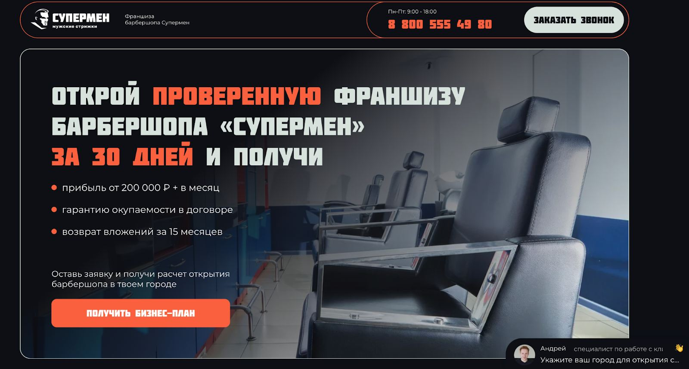
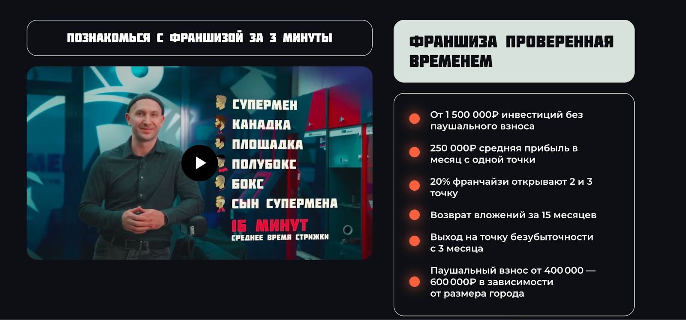
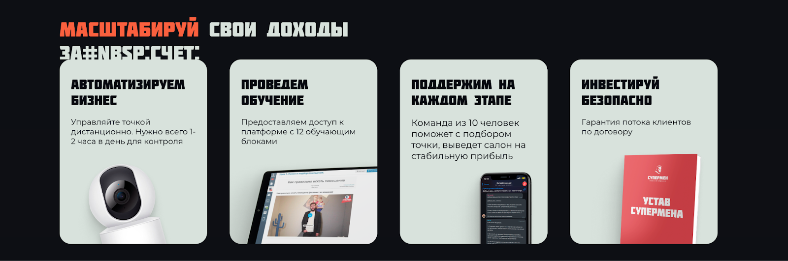
В общем, мы дорабатывали сайт вплоть до начала февраля, учитывая пожелания со стороны Супермена. В феврале мы передали сайт на набор трафика и оптимизацию в Яндекс.Директ, выделив дополнительный бюджет.
А в марте нас ждал сюрприз.
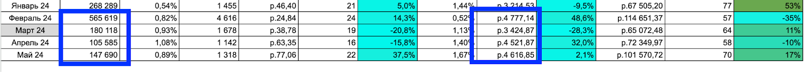
Вы могли заметить, как охваты сильно упали после февральских тестов нового сайта, в то время как стоимость заявки продолжала расти, несмотря на то, что мы перестали направлять трафик на новый сайт и сконцентрировали все бюджеты на старом.
Так вот, помните, в августе 2023 года мы провели аудит наших аккаунтов, и я говорил, что это ещё аукнется. И вот, в марте, параллельно с нашими аккаунтами, было решено протестировать новых подрядчиков, которые также обещали результаты, подобные предыдущему опыту с телеграм-ботом.
И это ни в коем случае нельзя осуждать. В маркетинге можно давать обещания, если у вас есть опыт или 100% уверенность в том, что внедряемое решение "не может не сработать". А если вы сверх того предоставляете гарантии, то вы становитесь богом в мире маркетинга и вообще заслуживаете уважения. Но были некоторые просчёты.
Для тех, кто разбирается в технических аспектах, наверняка понятно, что происходит, когда на одну и ту же аудиторию вы запускаете рекламу с разных аккаунтов на одну и ту же посадочную страницу. Верно, вы тратите в два раза больше средств, а привлечение внимания просто перетягивается на одну из сторон.
В первый месяц наши аккаунты удерживали позиции. Да, стоимость заявки выросла, да, количество лидов снизилось на 20%, но мы всё равно оставались лидерами.
Во втором месяце мы разделили аудиторию по городам. За нами остался основной город по "добыче" лидов - Москва, а также нам отошёл ЮФО. Наши "коллеги" взяли Санкт-Петербург и ряд других регионов.
Если бы им удалось раскрутить СПб, то без всякого сарказма они заслужили бы аплодисменты. Однако опыт и подход "коллег" не принесли особого эффекта, так как проблема крылась не в технической стороне, а в самом рынке и продукте.
В мае мы смогли вернуться к тестам новой посадочной страницы и к разработке чат-бота.
Какие выводы можно сделать после двух лет работы над проектом:
1. "Волшебная палочка" в генерации лидов - это оболочка вашего продукта. Никакие технические настройки в рекламе не помогут, если далее вас ждёт сложная коммуникация или продукт слабо отзывается на потребности клиента.
На рынке постоянно появляются новые продукты с более сильными обещаниями и гарантиями. Оболочка продукта требует постоянной модернизации под потребности клиента, и у Nuts Digital есть такой инструмент работы с продуктом.
2. Да, в этом кейсе нам удалось оптимизировать рекламный бюджет на 40-50%, при этом сохранив прежний объём лидов и примерно ту же стоимость заявки. Это стало возможным за счёт сокращения бюджета на охватные кампании в РСЯ. Освободившиеся средства мы направили на тестирование новых гипотез для увеличения количества обращений.
3. Яндекс по-прежнему хорошо работает на верхних уровнях воронки. За 2 года Супермен масштабировался более чем на 15%. Считаю, это отличная динамика в условиях текущей нестабильности рынка.
4. Франшизный бизнес и инфобизнес требуют поддержки клиента на всех этапах воронки. Здесь и сейчас можно вызвать интерес к теме, но удержать это внимание и преобразовать его в заключение договора требует комплексного подхода и больше времени.
В следующих кейсах поделимся новыми результатами по данному проекту.
Благодарю за уделённое время. Предлагаю сейчас ознакомиться со следующим кейсом:
Также вы можете оставить заявку по форме ниже для получения бесплатной консультации по вашему проекту. Разберём, что сейчас не так с проектом, как бы вы хотели, чтобы это было, и как мы сможем вам помочь.